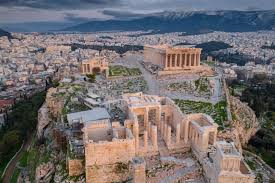

Athenian Acropolis
Ancient Citadel, Athens, Greece
The Acropolis of Athens, ancient citadel dedicated to the city’s patron goddess, Athena. Its existing buildings were primarily constructed in the second half of the 5th century bce. The complex is perhaps the best known of the ancient acropolises, which were central, defensively oriented districts in ancient Greek cities. Typically located on the cities’ highest ground, acropolises were home to the cities’ chief municipal and religious buildings. The Parthenon, a temple to Athena, is the crowning jewel of the acropolis of Athens and is considered to be the culmination of the development of the Doric architectural order.